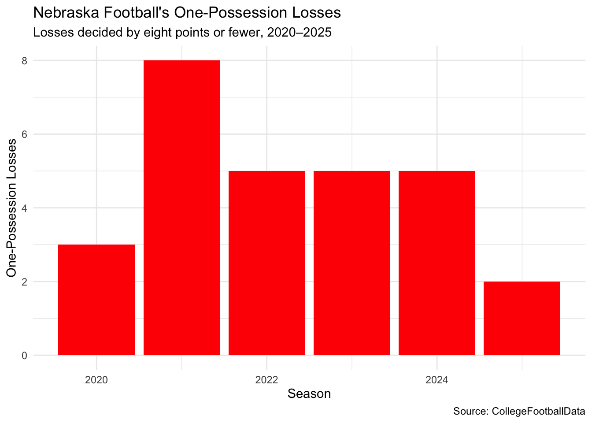
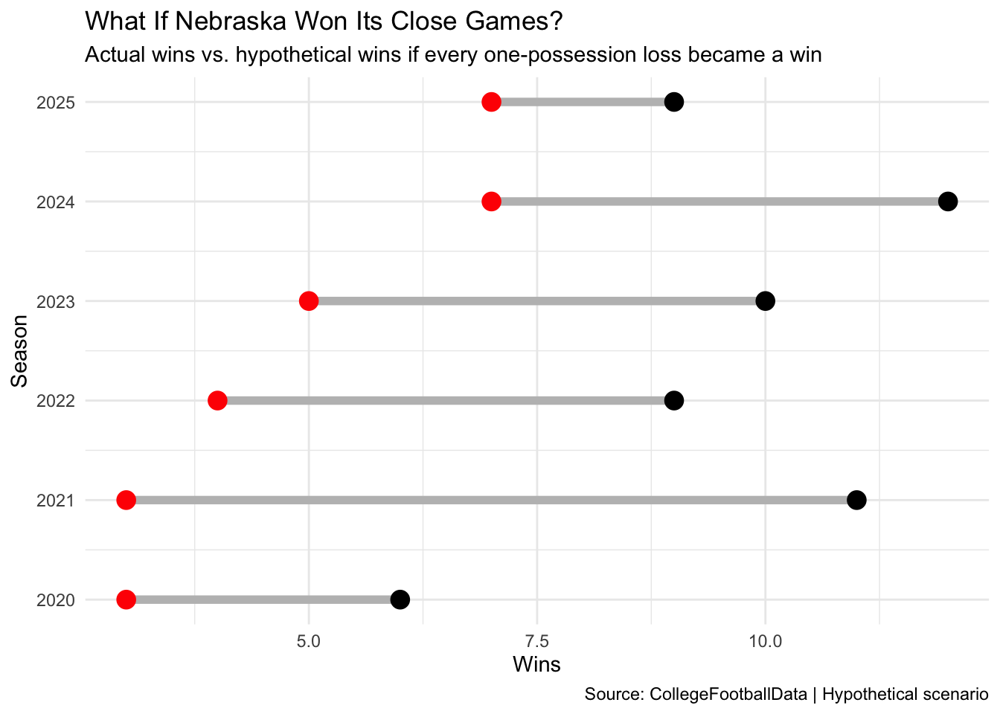
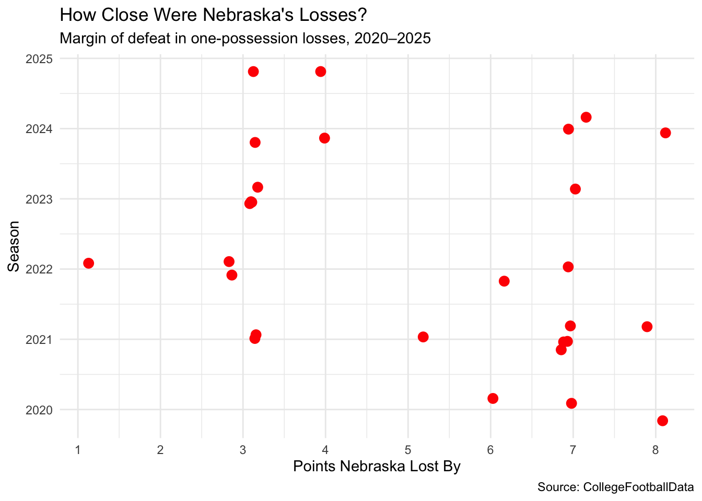

The Data Behind Husker Football One Possession Losses
football
huskers
data
Author
Layne Willis
Published
November 13, 2026
Let’s be honest if you are a Husker fan then you know about our one loss games. A lot of our seasons have been determined by four or five one loss games. I always ask “What would happen if we won those games” or “What if we made this field goal in the second quarter” where would be at statistically in the win loss column? That is exactly what I am here to do today.
Code
library(tidyverse)
── Attaching core tidyverse packages ──────────────────────── tidyverse 2.0.0 ──
✔ dplyr 1.2.1 ✔ readr 2.2.0
✔ forcats 1.0.1 ✔ stringr 1.6.0
✔ ggplot2 4.0.3 ✔ tibble 3.3.1
✔ lubridate 1.9.5 ✔ tidyr 1.3.2
✔ purrr 1.2.2
── Conflicts ────────────────────────────────────────── tidyverse_conflicts() ──
✖ dplyr::filter() masks stats::filter()
✖ dplyr::lag() masks stats::lag()
ℹ Use the conflicted package (<http://conflicted.r-lib.org/>) to force all conflicts to become errors
Code
library(cfbfastR)
Code
games2020 <- cfbfastR::cfbd_game_info(year =2020, team ="Nebraska")games2021 <- cfbfastR::cfbd_game_info(year =2021, team ="Nebraska")games2022 <- cfbfastR::cfbd_game_info(year =2022, team ="Nebraska")games2023 <- cfbfastR::cfbd_game_info(year =2023, team ="Nebraska")games2024 <- cfbfastR::cfbd_game_info(year =2024, team ="Nebraska")games2025 <- cfbfastR::cfbd_game_info(year =2025, team ="Nebraska")games <-bind_rows(games2020, games2021, games2022, games2023, games2024, games2025)
ggplot(lossesbyyear, aes(x = season, y = close_losses)) +geom_col(fill ="red") +labs(title ="Nebraska Football's One-Possession Losses",subtitle ="Losses decided by eight points or fewer, 2020–2025",x ="Season",y ="One-Possession Losses",caption ="Source: CollegeFootballData" ) +theme_minimal()

If we look at the data here I see a total of 28 one-possession losses in the last six seasons, keep in mind that doesn’t include the current 2026 season. That is a lot of one possession games in college football given there is usually only 12 games in the regular season. Let’s just say we won half of those, all of sudden we have 14 additional wins across six seasons to have. The worst one is 2021 which wow, I remember that year. They called us the best-worst team ever! If you look over at 2025 we only had two which isn’t much but we also won six games that season so, it may not look much but that would’ve been an eight win season. Now remember just because it was one possession doesn’t mean the Huskers should’ve won, we will explore that in our next data set.
records <- winsbyyear |>inner_join(lossesbyyear, by ="season") |>mutate(possible_wins = actual_wins + close_losses)
Code
ggplot(records, aes(y = season)) +geom_segment(aes(x = actual_wins, xend = possible_wins,yend = season), color ="gray", linewidth =2) +geom_point(aes(x = actual_wins), color ="red", size =4) +geom_point(aes(x = possible_wins), color ="black", size =4) +labs(title ="What If Nebraska Won Its Close Games?",subtitle ="Actual wins vs. hypothetical wins if every one-possession loss became a win",x ="Wins",y ="Season",caption ="Source: CollegeFootballData | Hypothetical scenario" ) +theme_minimal()

Now this data is really interesting, here I have a dumbbell chart showing actual wins versus hypothetical wins. Those actual wins are the red dots, and the hypothetical wins are the black dots. The hypothetical wins are showing if we won those one-possession games. 2021 hurts to look at every time I see it, but if we look at that there were 11 total wins we could’ve had. With 11 wins that’s a Big Ten Championship appearance, and if we win that then we go to the playoffs. Also, look at 2024 if we won all those games that another 11 hypothetical wins which is another Big Ten Championship appearance. Now let’s go a little deeper into our hypothetical, that 2021 season if we get 11 wins how many recruits want to come to Nebraska now? How many of those recruits would be 5 stars? How much better could our team have been if we won those 11 games? In our next data graph we’re going to look at how consistently we were losing within 3 points or if we were consistently losing and it was closer to 8 points.
Code
ggplot(closelosses, aes(x = margin, y = season)) +geom_jitter(color ="red", size =3, width =0.2, height =0.2) +labs(title ="How Close Were Nebraska's Losses?",subtitle ="Margin of defeat in one-possession losses, 2020–2025",x ="Points Nebraska Lost By",y ="Season",caption ="Source: CollegeFootballData" ) +scale_x_continuous(breaks =1:8) +theme_minimal()

Now looking at this graph there is a lot to digest. This graph is showing us how consistent in points were those one-possession losses. I count 10 losses by three and nine losses by seven. Which shows it was pretty even on the margin of defeat. Earlier I was talking about 2021 and in that season a lot of the losses were by seven, which is harder to win a drive on than three. This data set shows us a lot of it was pretty even. Something that sticks out to me though is 2023. In our hypothetical wins we could’ve had 10 wins in 2023. Four of those five one-possession losses were decided by a field goal. Now if you’re a Husker fan you know about our special teams, we haven’t had the greatest field goal unit. This tells me 2023 could’ve been one heck of a year, which was also Matt Rhule’s first full year at Nebraska. One question we could ask from this is “How different would Matt Rhule’s team look today if he got those 10 wins in 2023”. I am sure there would be very many things different if he got ten wins in that season. Either way you look at this we could’ve had a very different team by now if we just wrangled in those one loss games.